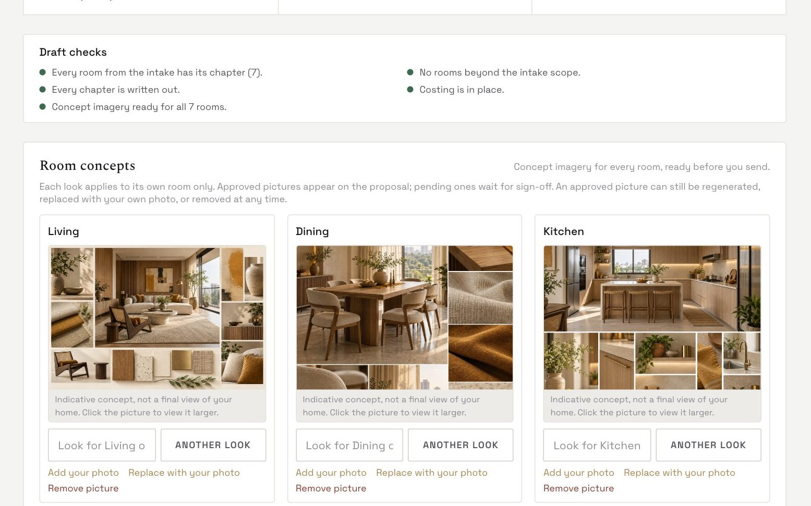
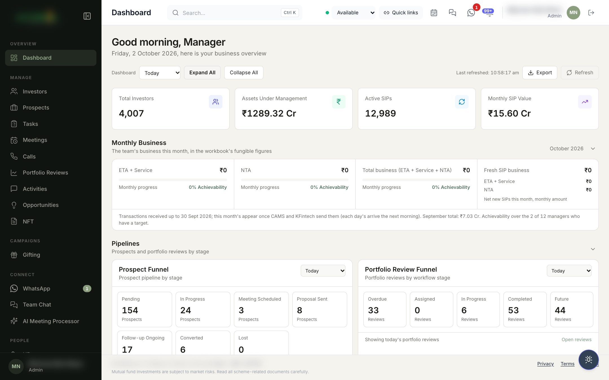
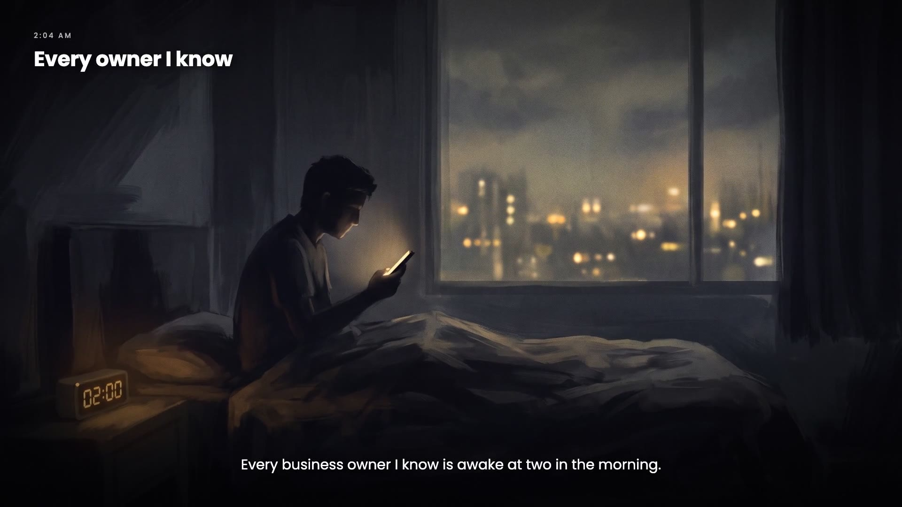
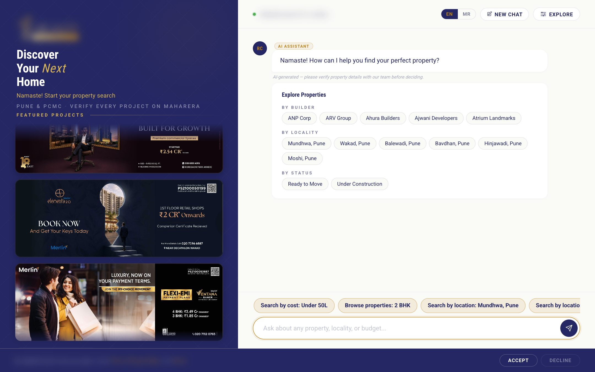
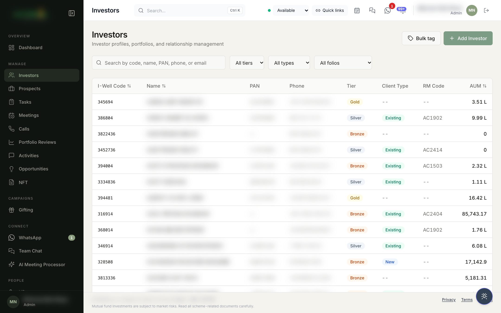
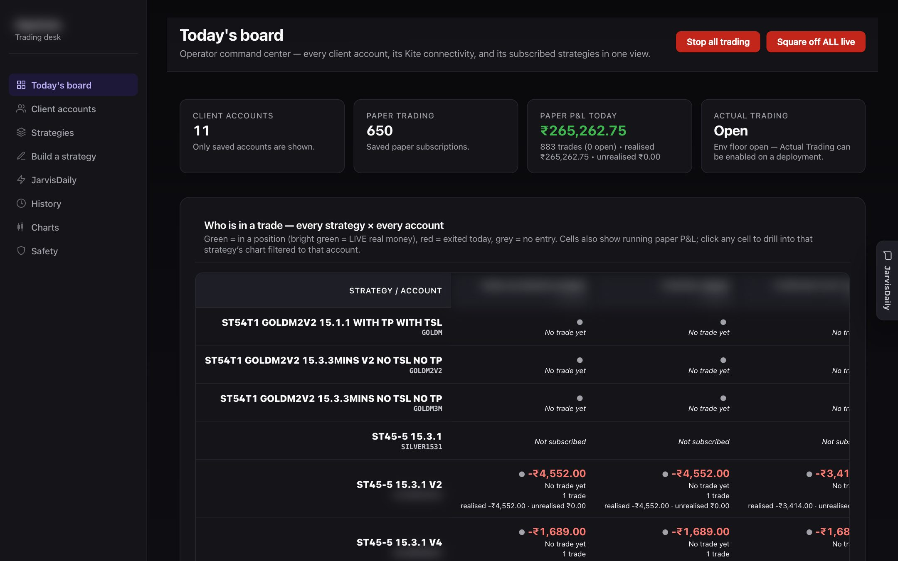
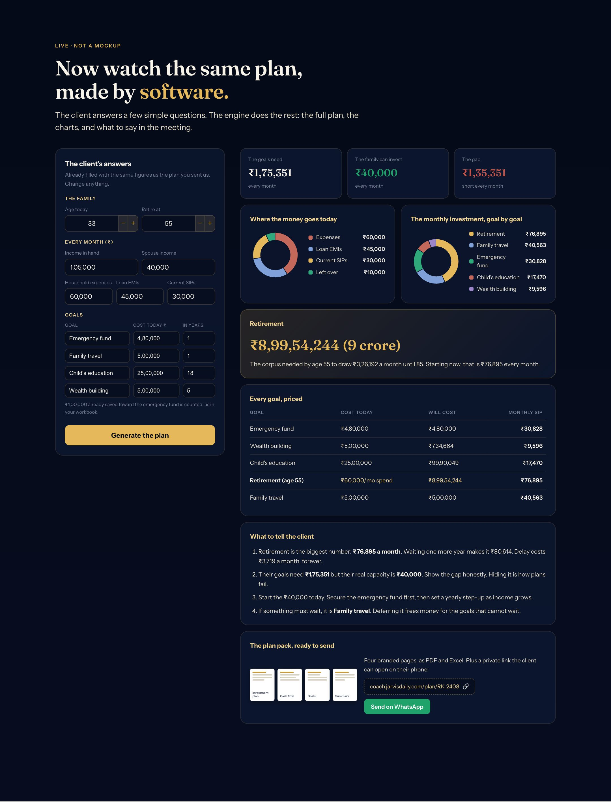
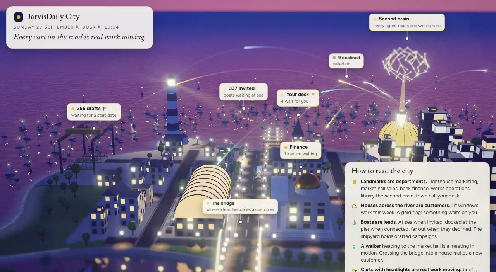

Your AI department, run by us.
An AI automation agency and software company. We audit a business, build the software and the AI employees it needs, and run them every day.
The night shift nobody hired.
- Why every owner is awake at 2 ama hundred years of tools that promised time and took more
- Last Tuesday, 11:40 pma sixty-lakh buyer, one question, nobody answered till nine
- The same night, with an AI departmenta call back in a minute, a visit booked, the numbers ready, six things for a human yes
Sound on. Download the film to share it on its own to share it on its own.

A forty-person firm. It still cannot run a day without the founder.
The worry is measured. It costs money every week.
more likely to qualify a lead when a business replies within an hour. Most take a day. One in four never reply.
Harvard Business Review, 2,241 companiesof calls to small businesses never reach a person. Most callers who hit voicemail hang up and call a competitor.
411 Locals; Invocaof calls to businesses arrive after hours or on weekends, when nobody is there to take them.
AnswerConnect, 2026of an owner's working week goes to admin, invoices and chasing, not to selling or building.
Xero; Startups Magazineof consumers now ask an AI for a business recommendation, up from 6 percent a year earlier. Two thirds of businesses appear in none of the answers.
BrightLocal 2026; AskedAboutIndian MSMEs has put AI to work. Most of the rest say they do not know which tools fit them or where to begin.
Vi Business MSME study, 2026Where does your week go?
Move the sliders. The arithmetic uses the research on the previous slide and is written under each number.
Estimates from AnswerConnect 2026, 411 Locals and HBR 2011. Your real numbers come out of the audit.
This is where we come in.
Custom software
The CRM, the dashboard, the engine a business actually needs. Built around how they already work, not a template they must bend to.
AI employees
Agents that do the repeated work twenty-four seven: replies, calls, research, drafts, follow-ups, reports. People keep the judgment.
Forward-deployed engineers
We sit inside the business, learn how it runs, build next to the team, and keep running what we built.
What exactly we do.
Sales
- Leads captured on web and WhatsApp, day and night
- An AI call-back within a minute, in English, Hindi or Marathi
- Follow-ups that never slip
- Proposals drafted in minutes
- Meetings booked while you sleep
Marketing
- Social posts researched, drafted and sent on schedule
- Content written for Google and for AI engines (SEO, AEO, GEO)
- Websites that bring business, built in days
- Reviews asked for and answered
- Monthly numbers, explained
Operations
- A CRM built around your process
- Invoices, reminders and collections on time
- A dashboard of the whole business
- A second brain that remembers every client
- A chief of staff that runs the day
Technology
- Custom software and engines
- Voice agents that call and answer
- WhatsApp assistants for customers and staff
- Trading and planning engines from your own rules
- An Agent OS for the whole company
Twelve hats every business wears. Tap the ones that hurt.
Your first AI employees
Tap any hat on the left. We will show the first three employees we would put in, in order.
It always starts with an AI audit.
We do not start by selling a tool. We start by understanding where your hours and your leads go.
AI audit
Who does what, which tools, where the hours go. Part of it is done by our own AI interviewer.
Findings
A short map of where AI fits: sales, marketing, operations, finance. Three to five quick wins.
Proposal
What we will build, in plain words, with a working demo where we can.
Walkthrough
We go through it together. You say yes, no, or change this.
Build
Weeks, not months. A dashboard shows what was built and how it works.
Run and improve
Your AI employees work every day. We keep tuning them with your team.
Nothing waits for morning.
- Every enquiry answered, day and nightweb chat and WhatsApp, in the buyer's language
- A call-back within a minutean AI voice agent qualifies the lead and books the visit
- Proposals in minutes, follow-ups on timemeetings land on your calendar while you sleep


Found by Google, and by the AI engines.
- Posts that actually go outresearched, drafted, approved, scheduled
- Written for search and for AI answersSEO, AEO and GEO scored and fixed
- A website that brings businessbuilt in days, with a working assistant on it


The whole business in one place.
- A CRM built around your processclients, prospects, tasks, reviews, meetings
- Reminders raised by the system, not by memoryfollow-up calls auto-raised with a 91 percent completion rate
- The morning dashboardassets, pipeline, what is overdue, who is on it

A chief of staff, a teammate per department, one shared memory.
- The chief of staff runs the dayreads the memory, assigns work, chases what is late
- AI does the legworkresearch, drafts, first versions, follow-ups
- People give judgmenttaste and approval at fixed gates
- Every correction teachesthe agent learns that person's taste
- Just talk to iton WhatsApp, or by voice
Your team, before you have had your tea.
- The chief of staff opens the threadfrom a deadline it found in the memory
- Each department answers with what it hascase studies, a draft, the client's payment history
- A person gives the yestaste and approval, then it goes out
The pitch for the Kolhapur hotel is due Friday. What do we have?
Three matching case studies in memory, all hospitality. Pulling them with the before and after photos.
First draft of the proposal in fourteen minutes. Scope from the brief, rates from the rate library, their last two meetings as context.
Their last three invoices cleared on time. No credit flag. Suggested payment terms attached.
Draft goes to the design lead at four for taste and approval. Nothing leaves without a human yes.
Shorten the fee section and lead with the resort project. Approved.
Your company stops depending on one person's memory. Every client, project, person, meeting, proposal and invoice is a node. Drag one.
Their rules, executed by software, on every account at once.
"Every rule we used to watch by hand now runs on its own, and I can stop all of it in one click."Owner's words

Nineteen modules, one login, the whole book in view.
"Half the team's week moved from spreadsheets to client conversations."Owner's estimate
Proposals that took days now go out the same day.
"We send more proposals, faster, and clients see their rooms before they sign."Owner's words
An Excel workbook became an engine. An audit became a product.
"A plan that took an afternoon now takes the length of the meeting."Owner's words

What it costs, and what it replaces.
With Jarvis Daily
The retainer for an AI department that works twenty-four seven, after a one-time build that ranges from a few weeks to a few months of work depending on scope.
- Never on leave, never off the phone, never forgets a follow-up
- Grows with the business without a new hire for every new task
- Third-party AI and hosting on your own accounts, at cost, no markup
The alternative
A junior employee for the same money, for eight hours a day, plus training, management and the knowledge that leaves when they do.
- Leads still wait overnight and over weekends
- The process still lives in one person's head
- Every new task means another person to find, train and keep
If it saves one person's week or wins one extra client a month, it has paid for itself.
We run our own company on the same system.
- Founder-led engineeringthe people who design your system are the people who build it
- Nine businesses in six monthstrading, wealth, architecture, real estate, food, lending, a designers' body
- A human approves anything that goes outdrafts, calls, posts and payments all pass a person first

Start with an AI audit.
A twenty-minute conversation, then our audit of how your business runs today.
A map of where the hours go
Who does what, which tools you pay for, where leads and follow-ups are lost.
Three to five quick wins
The first things an AI employee should take off your team's plate, in order.
A proposal with a working demo
What we would build and run, in plain words, with something you can click.
Your business, running while you sleep.
Jarvis Daily. Your AI department, run by us.